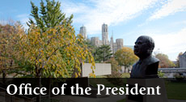
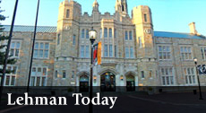

With more than 60,000 alumni and 12,000 students, Lehman College serves the Bronx and our surrounding region as an intellectual, economic, and cultural center. The College is named after Herbert H. Lehman, who was governor of New York State, a U.S. Senator, and an internationalist. His values of dedicated public service continue to guide the College today.

Learn about Lehman's rich history as a senior college of The City University of New York.
Academic planning, management, program reviews, and priorities.

College news, events, happenings, faculty in the spotlight, and more.
Lehman College 250 Bedford Park Boulevard West - Bronx, NY 10468 - Phone: (718) 960 - 8000